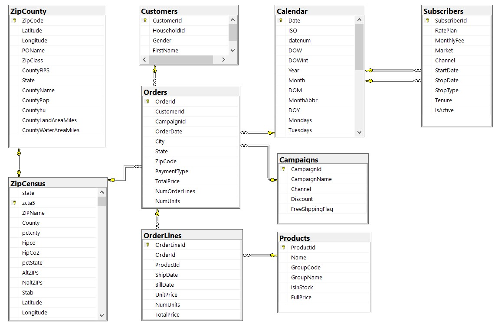

SQL Data Analysis - A Collection of Examples
The GitHub repository for this collection of examples can be found here.
This is a project that goes through different SQL queries, from simple to complex. You can find all the database files here. (download All Code Files). It accompanies the book "Data Analysis Using SQL and Excel, 2nd Edition" , by Gordon S. Linoff. However, the queries created based on this database are original (not included in the book mentioned above). They are queries meant to walk through concepts ranging from filtering, grouping, sorting, joining, pivoting, applying various types of functions (aggregate, window functions, date functions etc.), to using table expressions and stored procedures .
Below is a snapshot of the database diagram. It is the database of a fictional store, with Customers, Products, Orders, Campaigns etc.
The project includes over 50 examples, grouped in 5 files. Here is one of my favorites: calculating a RFM (Recency, Frequency, Monetary value) score for all the households in the database:
/* Calculate the date of first purchase, the date of last purchase and the
Recency (number of days since last purchase)
Frequency (total number of puchases)
Monetary value (total amount spent)
Assume that the current date is 2016-12-31.*/
SELECT Customers.HouseholdId,
Orders.OrderDate AS [Current Order Date],
FIRST_VALUE(Orders.OrderDate) OVER (PARTITION BY Customers.HouseholdId ORDER BY Orders.OrderDate ) AS [Date of first purchase],
FIRST_VALUE(Orders.OrderDate) OVER (PARTITION BY Customers.HouseholdId ORDER BY Orders.OrderDate DESC) AS [Date of last purchase],
DATEDIFF(day,CONVERT(DATE,FIRST_VALUE(Orders.OrderDate) OVER (PARTITION BY Customers.HouseholdId ORDER BY Orders.OrderDate DESC)),'2016-12-31') AS [Number of days since last purchase],
COUNT(Orders.OrderId) OVER (PARTITION BY Customers.HouseholdId) AS [Number of purchases],
SUM(Orders.TotalPrice) OVER (PARTITION BY Customers.HouseholdId) AS [Total Amount Spent]
FROM Customers
JOIN Orders ON Orders.CustomerId = Customers.CustomerId
WHERE Customers.HouseholdId<>0
ORDER BY Customers.HouseholdId,Orders.OrderDate;
GO
/* Starting from the query above, calculate a RFM score (Recency, Frequency, Monetary value) for all the households in the database.
Give a score from 1 to 5 for each of the Recency, Frequency and Monetary value indicators (5 corresponds to the best/highest value)
Add the scores for R, F, M to get the final RFM SCore.
Order all the households by RFM score and then by Monetary Value and calculate a percent rank for each.*/
WITH rfm
AS
(
SELECT Customers.HouseholdId,
FIRST_VALUE(Orders.OrderDate) OVER (PARTITION BY Customers.HouseholdId ORDER BY Orders.OrderDate DESC) AS [Date of last purchase],
DATEDIFF(day,CONVERT(DATE,FIRST_VALUE(Orders.OrderDate) OVER (PARTITION BY Customers.HouseholdId ORDER BY Orders.OrderDate DESC)),'2016-12-31') AS [Recency],
COUNT(Orders.OrderId) OVER (PARTITION BY Customers.HouseholdId) AS [Frequency],
SUM(Orders.TotalPrice) OVER (PARTITION BY Customers.HouseholdId) AS [Monetary Value]
FROM Customers
JOIN Orders ON Orders.CustomerId = Customers.CustomerId
WHERE Customers.HouseholdId<>0
)
,RFMCalc AS
(
SELECT HouseholdId,
MAX(Recency) AS Recency,
MAX(Frequency) AS Frequency,
MAX([Monetary Value]) AS [Monetary Value],
NTILE(5) OVER(ORDER BY MAX(Recency) DESC) AS RecencyScore,
NTILE(5) OVER(ORDER BY MAX(Frequency)) AS FrequencyScore,
NTILE(5) OVER(ORDER BY MAX([Monetary Value])) AS MonetaryScore,
NTILE(5) OVER(ORDER BY MAX(Recency) DESC) + NTILE(5) OVER(ORDER BY MAX(Frequency)) + NTILE(5) OVER(ORDER BY MAX([Monetary Value])) AS RFMScore
FROM rfm
GROUP BY HouseholdId
)
SELECT
RFMCalc.*,
FORMAT(PERCENT_RANK() OVER(ORDER BY RFMScore DESC,[Monetary Value] DESC),'N5') AS [Percent Rank]
FROM RFMCalc
ORDER BY RFMScore DESC,[Monetary Value] DESC;
GO
Again, you can find many other T-SQL examples in this Github repository.